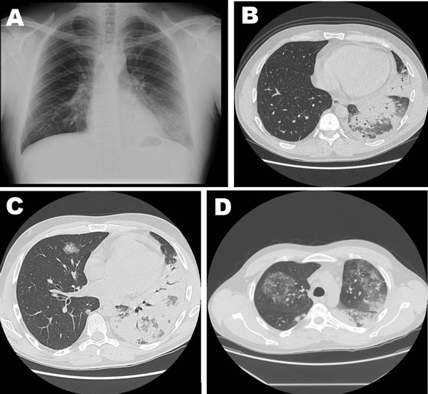

Ficha del catálogo
Bronconeumonía (patrón lobulillar)
- Sistema
- Respiratorio
- Modalidad
- TC
- Región
- Tórax
- Dificultad
- Intermedio
Forma de neumonía que se disemina a través de la vía aérea y afecta de manera parcheada a lobulillos vecinos, sin respetar los límites de un lóbulo completo. Es el patrón habitual de las infecciones por estafilococo y por bacilos gramnegativos, y también de muchas neumonías nosocomiales. El paciente presenta fiebre, tos y expectoración purulenta, con una radiografía menos ordenada que la de la neumonía lobar.
Técnica
Radiografía de tórax posteroanterior y lateral como estudio inicial, y tomografía de tórax con cortes finos cuando la evolución es tórpida o se sospechan complicaciones.
Qué observar
- Opacidades parcheadas de bordes mal definidos distribuidas alrededor de los bronquios
- Nódulos centrolobulillares y patrón de árbol en brote en las zonas menos afectadas
- Afectación multifocal y con frecuencia bilateral, de predominio en lóbulos inferiores
- Broncograma aéreo escaso o ausente porque la vía aérea contiene secreciones
- Ausencia de límites cisurales netos, a diferencia de la consolidación lobar
- Aparición de cavitación o de derrame que anuncia complicación
Hallazgos
Opacidades algodonosas parcheadas de distribución peribronquial y multifocal, con nódulos centrolobulillares en la periferia de las áreas consolidadas.
Perlas
La clave está en la distribución más que en la densidad. Un relleno alveolar que respeta un límite cisural sugiere neumonía lobar, mientras que las manchas dispersas con nódulos centrolobulillares apuntan a diseminación por la vía aérea.
Diagnóstico diferencial
- Neumonía lobar
- Consolidación homogénea con broncograma aéreo limitada por cisuras.
- Edema pulmonar
- Distribución perihiliar simétrica con líneas septales y cardiomegalia.
- Metástasis o nódulos múltiples
- Bordes definidos, sin fiebre ni cambios rápidos en el control.
Simuladores
- Atelectasias laminares múltiples en el paciente encamado
- Hemorragia alveolar parcheada
- Aspiración crónica de bajo volumen
Por modalidad
- RX
- Opacidades parcheadas mal definidas de predominio basal
- TC
- Muestra los nódulos centrolobulillares y define la extensión real
Protocolo
Radiografía en bipedestación cuando el estado del paciente lo permite, y tomografía sin contraste con cortes finos si hay mala respuesta al tratamiento.
Clasificación
Errores frecuentes
- Interpretar la afectación bilateral parcheada como edema y retrasar el antibiótico
- No repetir la radiografía de control en las neumonías que no mejoran
- Pasar por alto una cavitación incipiente dentro de una zona consolidada

bronconeumonia patron lobulillar nodulos centrolobulillares infeccion consolidacion parcheada